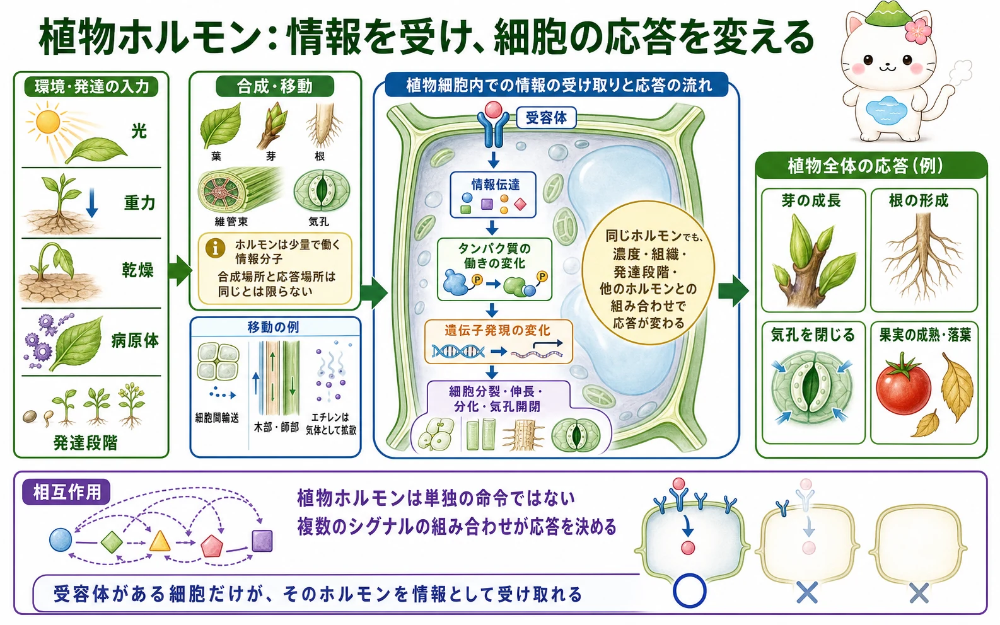
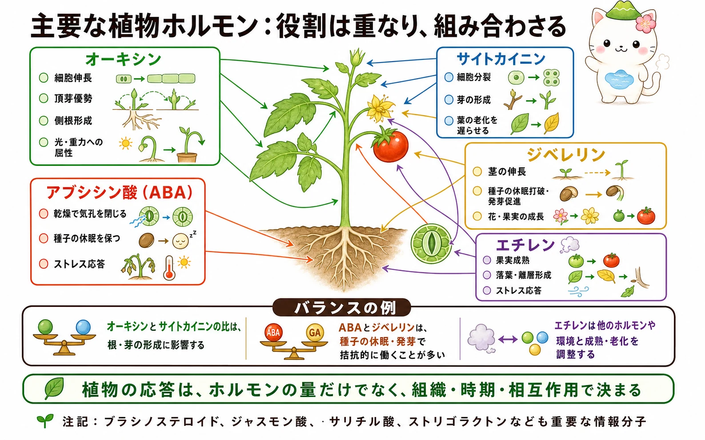

ホルモンはどう情報になるか
植物ホルモンは、少量で細胞や器官のふるまいを変える情報分子です。動物のような内分泌腺や血液循環だけに頼る仕組みではありません。合成された場所の近くで働くこともあれば、細胞間、木部、師部を通って移動することもあります。エチレンのように気体として拡散するホルモンもあります。
大切なのは、ホルモンそのものが「伸びろ」「休眠しろ」と一つの命令を出すわけではないことです。応答する細胞に受容体があり、その細胞の発達状態、ホルモンの濃度、他の情報分子、環境条件がそろったときに、特定の応答が起こります。同じホルモンでも、根と芽、若い組織と成熟した組織では働き方が違います。
受容体から細胞応答まで
ホルモンを受け取る受容体は、細胞膜、細胞質、核などにあります。ホルモンが受容体に結びつくと、タンパク質の活性、イオンの移動、タンパク質の分解、遺伝子発現などが変わります。数秒から数分で起こるイオンチャネルの変化もあれば、遺伝子発現を経て数時間から数日かけて現れる成長・分化の変化もあります。
たとえば乾燥時には、アブシシン酸の情報が孔辺細胞のイオン移動を変え、気孔を閉じる方向へ働きます。一方、芽や根の形づくりでは、ホルモンによる遺伝子発現の変化が細胞分裂・伸長・分化の積み重ねとして現れます。速い応答と遅い応答は、同じ情報網の異なる出口です。


ホルモンが届いても、受容体がなければその細胞は情報として受け取れないよ。だから同じ植物の中でも、場所によって返事が変わるんだ。
五つの代表的なホルモン
オーキシンは細胞伸長、頂芽優勢、側根形成、光や重力への屈性に深く関わります。サイトカイニンは細胞分裂や芽の形成に関わり、葉の老化を遅らせる働きもあります。ジベレリンは茎の伸長、種子の休眠打破や発芽、花や果実の成長などに関わります。
アブシシン酸（ABA）は、乾燥時の気孔閉鎖、種子の休眠維持、さまざまなストレス応答で重要です。エチレンは気体のホルモンで、果実成熟、落葉・離層形成、傷や冠水などへの応答に関わります。これらは「五大ホルモン」として学ぶことが多いですが、どの一つも単独の働きだけで植物を説明するものではありません。

量ではなく組み合わせで働く
植物の応答では、ホルモンの絶対量だけでなく、複数のホルモンの比や時間的な変化が重要です。たとえば培養組織の再分化では、オーキシンとサイトカイニンの比が根や芽の形成に影響します。種子では、ABAが休眠を保つ方向に、ジベレリンが発芽を進める方向に働くことが多く、その釣り合いが発芽の時期を左右します。
また、エチレンによる成熟や老化は、オーキシン、ABA、環境条件などとも結びついて調整されます。これをクロストークと呼びます。ある処理で一つのホルモンを増減させたときに起こる変化も、他のホルモンや環境の変化を含めて解釈しなければなりません。
広がる植物ホルモン研究
現在は、ブラシノステロイド、ジャスモン酸、サリチル酸、ストリゴラクトンなども重要な植物の情報分子として扱われます。ジャスモン酸やサリチル酸は食害や病害への防御応答、ストリゴラクトンは枝分かれや根と土壌生物との関係などで注目されます。
こうした分子を追加で暗記する前に、まず「環境や発達の情報を受容体が受け取り、複数の経路が組み合わさって細胞応答をつくる」という共通の枠組みを持つことが大切です。その枠組みがあれば、未知の植物応答にも理由を考えながら近づけます。
「オーキシン＝伸長」のような一対一の暗記は、入口としては便利。でも本当は、どの細胞で、いつ、ほかの情報とどう重なるかまで見て、はじめて応答が決まるんだ。
この冊子の要点
- 植物ホルモンは少量で働く情報分子で、合成場所と応答場所は同じとは限りません。
- 受容体からの情報伝達は、タンパク質の働き、イオン移動、遺伝子発現を変え、速い応答と遅い応答を生みます。
- オーキシン、サイトカイニン、ジベレリン、ABA、エチレンは代表的な植物ホルモンですが、働きは互いに重なります。
- ホルモンの量だけでなく、組織、発達段階、環境、複数ホルモンの相互作用が植物の応答を決めます。
参照資料
- OpenStax Biology 2e：Plant Sensory Systems and Responses
- Taiz et al., Plant Physiology and Development, Oxford University Press.
- Davies (ed.), Plant Hormones: Biosynthesis, Signal Transduction, Action!, Springer.